Windows Server 2016 インプレースアップグレード
Amazon EC2上のWindows Server 2016を、AWS提供のインストールメディアを使用してWindows Server 2025へ直接アップグレードする実機検証手順をまとめる
バックアップAMI、AWSドライバー、EBSインストールメディア、実行中の監視、アップグレード後の確認を順に整理する
1. インプレースアップグレードの概要
インプレースアップグレードは、設定、サーバーの役割、データを保持したまま、既存サーバーのOSを新しいバージョンのWindows Serverへ移行する方式。再構築や移行と比べて作業工数を抑えられる一方、失敗時の切り戻しが難しいため、事前バックアップと事後確認を含めた計画が前提になる
| 方式 | 内容 | 特徴 |
|---|---|---|
| インプレースアップグレード | 既存OS上で新バージョンをインストールし、設定・役割・データを引き継ぐ | 工数が小さい。IPアドレスやインスタンスIDが変わらない。失敗時の切り戻しは事前バックアップ頼み |
| クリーンインストール + 移行 | 新規サーバーを構築し、役割・機能・データを移し替える | 環境を刷新できる。作業量とダウンタイムが大きい。接続先変更の調整が必要 |
| Automationランブック | AWS Systems Managerがインスタンスを複製し、複製側を自動でアップグレードする | 元インスタンスを変更せず検証できる。成果物は別インスタンス(別ID・別IP)になる |
AWSEC2-CloneInstanceAndUpgradeWindowsは、元インスタンスを複製した側でアップグレードし、検証用の新しいAMIを作成する方式。実行前にランブックのTargetWindowsVersionで対象バージョンを確認し、対象外の場合や既存インスタンスを更新する場合は本ページのインストールメディア方式を使用する
出典：Microsoft公式: Windows Serverアップグレードを計画する
出典：AWS公式: Automationランブックによるアップグレード
2. サポート期限とアップグレードパス
2.1 Windows Server 2016のサポート期限
Windows Server 2016は延長サポート期間に入っている。セキュリティ更新を継続して受け取れる期間内に、後継バージョンへの移行を完了させる
| サポート区分 | 終了日 | 現在の扱い |
|---|---|---|
| メインストリームサポート | 2022/01/11 | 終了済み |
| 延長サポート | 2027/01/12 | この日までに移行を完了する |
他バージョンの期限はEOL / ライフサイクル一覧表で確認できる
出典：Microsoft公式: Windows Server 2016のライフサイクル
2.2 Windows Server 2016からのアップグレードパス
本ページでは、非クラスター構成のWindows Server 2016からWindows Server 2025へ、インストールメディアを使用して直接アップグレードする
| 確認項目 | 内容 |
|---|---|
| アップグレード元 | Windows Server 2016 Datacenter、日本語、デスクトップエクスペリエンス |
| アップグレード先 | Windows Server 2025 Datacenter、日本語、デスクトップエクスペリエンス |
| 直接アップグレード | 対応。Windows Server 2025では、非クラスター構成について一度に最大4バージョンのアップグレードがサポートされる |
| 維持する条件 | 言語、アーキテクチャ、エディション、インストールオプションを互換性のある組み合わせにする |
Windows Server 2025以降では、非クラスター構成について一度に最大4バージョンのインプレースアップグレードがサポートされる。Windows Server 2012 R2以降から2025へ直接移行できるため、Windows Server 2016から2025への経路も正式なサポート対象になる
出典：Microsoft公式: Windows Serverのアップグレードパスを計画する
3. アップグレードできない・非推奨の構成
サーバーの役割やOS構成によっては、インプレースアップグレードを選択できない。セットアップを開始する前に、対象サーバーが次のどの分類に該当するかを確認する
| 分類 | 該当する構成 | 対応方針 |
|---|---|---|
| 新規サーバーへの移行を優先 | Active Directoryドメインコントローラー、フェールオーバークラスター | DCは新しいOSで新規構築して昇格し、旧DCを降格する。クラスターはクラスターOSローリングアップグレードを使用し、一度に1バージョンずつ進める |
| インプレース変更は非対応 | Server Coreとデスクトップエクスペリエンスの切り替え、言語変更、DatacenterからStandardへのダウングレード、32ビットから64ビットへの変更、VHDブート | 現在と互換性のある言語、アーキテクチャ、エディション、インストールオプションを選ぶ。条件を変更する場合はクリーンインストールと移行を計画する |
| 事前作業が必要 | NICチーミング、稼働アプリケーション、サーバーの役割と機能 | NICチーミングは事前に無効化して完了後に再有効化する。アプリケーションと役割はWindows Server 2025への対応状況を個別に確認する |
出典：Microsoft公式: Windows Serverのアップグレード制限
出典：Microsoft公式: ドメインコントローラーのアップグレード
出典：Microsoft公式: クラスターOSのローリングアップグレード
4. Amazon EC2固有の注意点
オンプレミスの手順に加えて、EC2では次の点を考慮する
| 項目 | 内容 |
|---|---|
| バックアップ | 作業前にAMIを作成する。インプレースアップグレードの確実な切り戻し手段はこのAMIのみ |
| インストールメディア | ISOをダウンロードせず、AWSが提供するパブリックスナップショットからEBSボリュームを作成してアタッチする。BYOLの場合は自前のメディアが必要 |
| AWSドライバー | 事前にAWS PV、ENA、NVMeドライバーを確認する。ネットワークやストレージのドライバーが古いと、アップグレード後にRDP接続できない、またはEBSボリュームを認識できないおそれがある |
| インスタンスサイズ | 2 vCPU・4 GiB RAM以上での実施をAWSが推奨。小さいインスタンスは一時的にサイズ変更して実施できる |
| ルートボリューム空き容量 | Windowsセットアップは容量不足を警告しない場合がある。旧OSがWindows.oldとして保持される分の空きを確保する |
| RDP切断 | セットアップ開始から数分でRDPセッションが切断される。進行状況はインスタンスのスクリーンショットを取得で確認する |
| ステータスチェック | アップグレード中は一時的に失敗ステータスになる。監視・自動復旧(オートリカバリ等)を設定している場合は事前に抑止する |
| 所要時間 | 役割とアプリケーションの数に依存し、AWSは40分から数時間かかる場合があると案内 |
出典：AWS公式: EC2 Windowsインスタンスでのインプレースアップグレードの実行
5. 今回の検証環境を構築する
5.1 検証環境
| 項目 | 値 |
|---|---|
| 検証基準日 | 2026/08/11 |
| リージョン | ap-northeast-1(東京) |
| アップグレード元AMI | Windows_Server-2016-Japanese-Full-Base-2026.07.15 |
| AMI ID | ami-01582627fc1ac1ed5 |
| AMI提供元 | Microsoft / OwnerAlias: amazon(検証済みプロバイダー) |
| アップグレード元 | Windows Server 2016 Datacenter(デスクトップエクスペリエンス、日本語、64ビット) |
| アップグレード先 | Windows Server 2025 Datacenter(デスクトップエクスペリエンス、日本語、64ビット) |
| インスタンスタイプ | t3.large(2 vCPU / 8 GiB) |
| ルートボリューム | gp3 100 GiB |
| AWS PVドライバー | 8.6.1(公式Latestパッケージで更新済み) |
| ENAドライバー | 2.11.0(確認時点のAWS公式最新バージョン) |
| NVMeドライバー | 1.8.2.53(AWS NVMeパッケージ 1.8.2) |
| キーペア | 検証用RSAキーペア |
| バックアップAMI名 | Windows Server 2016_20260811 |
| メディアスナップショットID | snap-026c037d2821a2ac8 |
| 実施日 / 所要時間 | 2026/08/11 / 約1時間 |
Windows Server 2025のシステム要件だけでなく、セットアップの一時ファイルとWindows.oldを含めた空きが必要になる。本ページでは容量不足による中断を避けるため、検証用ルートボリュームを100 GiBとする。既存環境では実使用量を確認し、Cドライブに少なくとも32 GiB以上の空きを確保してから実施する
5.2 Windows Server 2016 AMIの確認
今回の検証では、東京リージョンでami-01582627fc1ac1ed5を選択する。コンソール上でAMI名、アーキテクチャ、言語、所有者のエイリアス、検証済みプロバイダーの表示を確認し、同名の第三者AMIを選択しない
ami-01582627fc1ac1ed5を検索し、Windows Server 2016日本語版と検証済みプロバイダーの表示を確認する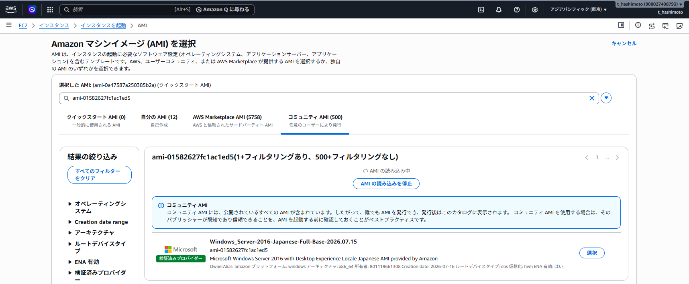
AMI IDはリージョンごとに異なり、AWS Windows AMIは定期的に更新される。本ページのAMI IDは2026/08/11時点の東京リージョンで選択した値であり、別のリージョンや後日の再検証ではSSMパブリックパラメータから最新値を取得する
aws ssm get-parameter `
--name "/aws/service/ami-windows-latest/Windows_Server-2016-Japanese-Full-Base" `
--region ap-northeast-1 `
--query "Parameter.Value" `
--output text5.3 Windows Server 2016インスタンスの起動
- Amazon EC2コンソールで
インスタンスを起動を選択 その他のAMIを閲覧するからami-01582627fc1ac1ed5を検索- AMI名、
OwnerAlias: amazon、日本語、64ビット、ENA有効を確認して選択 - インスタンスタイプに
t3.largeを選択 - 検証用のRSAキーペアを指定
- 検証用VPC・サブネットと、RDP(TCP/3389)を接続元限定で許可するSecurity Groupを設定
- ルートボリュームを
gp3100 GiBへ変更してインスタンスを起動
当初はt3.small(2 GiB)で起動したが、AWSがインプレースアップグレード時に推奨する4 GiB以上を満たすため、検証ではt3.large(8 GiB)へ変更した。最低条件を満たすt3.medium(4 GiB)でも実施できるが、セットアップ中の余裕を確保する場合は一時的なサイズアップを検討する
5.4 RDP接続とアップグレード前の記録
Administratorパスワードの取得とRDP接続の手順はWindows Server 2025の「1. Windowsインスタンス接続」と同じ。接続後、アップグレード前の状態を記録し、サーバー外(手元の端末など)へ退避する
Get-ComputerInfoで製品名、ビルド、エディションを記録する。アップグレード先のエディションを選ぶ際と、完了後のバージョン比較に使用する
Get-ComputerInfo -Property WindowsProductName,WindowsBuildLabEx,WindowsEditionID | Out-File -FilePath .\computerinfo.txtsysteminfo.exeでOS、更新プログラム、起動時刻、メモリ、システムモデルなどの全体情報を記録する。アップグレード後に構成差分を確認するための基準になる
systeminfo.exe | Out-File -FilePath .\systeminfo.txtipconfig /allでIPアドレス、サブネット、デフォルトゲートウェイ、DNS、DHCPの情報を記録する。アップグレード後にRDPやアプリケーション通信ができない場合の比較に使用する
ipconfig /all | Out-File -FilePath .\ipconfig.txt自動起動に設定されたサービスと現在の状態を記録する。アップグレード後に同じ一覧を取得し、停止したサービスやスタートアップ設定の変化を確認する
Get-Service | Where-Object { $_.StartType -eq "Automatic" } | Out-File -FilePath .\services.txt4つのテキストファイルはコマンドを実行したディレクトリへ保存される。サーバー障害時にも参照できるようにサーバー外へコピーし、winverの画面も取得する
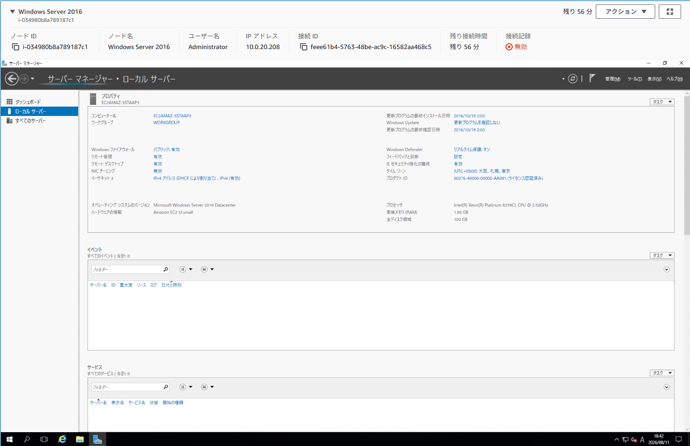
出典：Microsoft公式: Windows Serverのインプレースアップグレードを実行する
6. アップグレード前の準備
6.1 バックアップAMIの取得
- Amazon EC2コンソールで対象インスタンスを選択
アクション＞イメージとテンプレート＞イメージを作成を選択- イメージ名に用途と日付がわかる名前を入力。本検証では
Windows Server 2016_20260811を使用 - イメージを作成し、発行されたAMI IDを作業記録へ保存
- AMIのステータスが
利用可能になることを確認
既定ではイメージ作成時にインスタンスが再起動される。再起動しないを有効にするとファイルシステムの整合性が保証されないため、検証では既定(再起動あり)で取得する
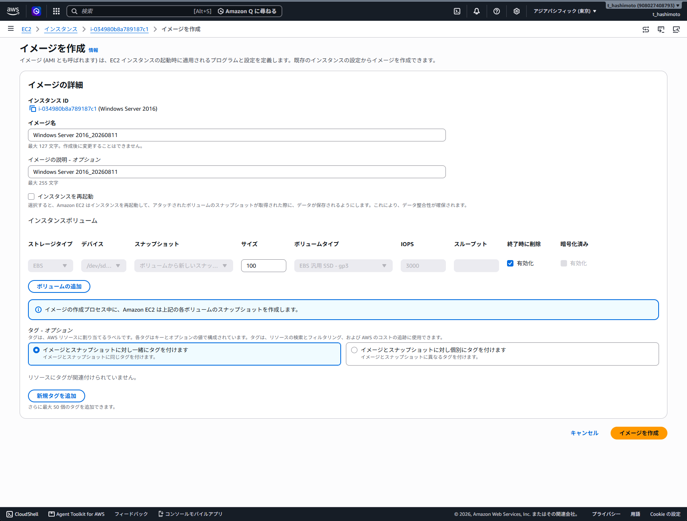
6.2 AWSドライバーの確認と更新
EC2上でWindows Serverをインプレースアップグレードする前に、AWS PV、ENA、NVMeドライバーを確認する。今回使用するt3.largeはNitroベースであり、実際のネットワークとEBSアクセスではENAとNVMeドライバーが重要になる。AWS PVドライバーはNitro世代のデータパスでは使用されないが、パッケージに含まれるLiteAgentなども更新されるため、事前確認の対象に含める
AWS PV、ENA、NVMeはOSの起動、ストレージ、ネットワーク接続に関係する。6.1のバックアップAMIが利用可能になったことを確認してから更新する。PVドライバーのMSI実行後は自動的に再起動し、最大15分程度接続できなくなる場合がある
6.2.1 AWS PVドライバーの更新
更新前のバージョンはレジストリから確認する。キーが存在しない場合や、対象OSで利用できるバージョンより古い場合は、AWS公式パッケージを使用して更新する
Get-ItemProperty HKLM:\SOFTWARE\Amazon\PVDriverWindows Server 2016のWindows PowerShellでは、既定の通信プロトコルのままS3へ接続するとSSL/TLSのセキュリティで保護されているチャネルを作成できませんでしたとなり、ZIPを取得できない場合がある。その場合は、現在のPowerShellセッションでTLS 1.2を有効にしてから再実行する
[Net.ServicePointManager]::SecurityProtocol = [Net.SecurityProtocolType]::Tls12公式のLatest URLからPVドライバーをダウンロードする
Invoke-WebRequest -UseBasicParsing -Uri "https://s3.amazonaws.com/ec2-windows-drivers-downloads/AWSPV/Latest/AWSPVDriver.zip" -OutFile "$env:USERPROFILE\pv_driver.zip"ダウンロードに失敗した状態でExpand-Archiveを実行すると、ZIPが存在しないため別のエラーになる。ファイルの存在とサイズを確認してから展開する
Get-Item "$env:USERPROFILE\pv_driver.zip"Expand-Archive -LiteralPath "$env:USERPROFILE\pv_driver.zip" -DestinationPath "$env:USERPROFILE\pv_drivers" -Force展開後にMSIの場所を確認し、セットアップウィザードを起動する
Get-ChildItem "$env:USERPROFILE\pv_drivers" -Filter "AWSPVDriverSetup.msi" -Recurse$msi = Get-ChildItem "$env:USERPROFILE\pv_drivers" -Filter "AWSPVDriverSetup.msi" -Recurse | Select-Object -First 1
Start-Process -FilePath $msi.FullNameセットアップウィザードでは、ライセンスに同意し、インストール先は既定値のC:\Program Files\Amazon\XenTools\を使用する。Preparation for Upgradeで自動再起動とバックアップに関する注意事項を確認してからI'm Readyを選択し、インストールを開始する
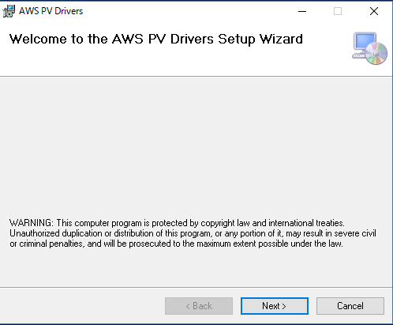
I Agreeを選択する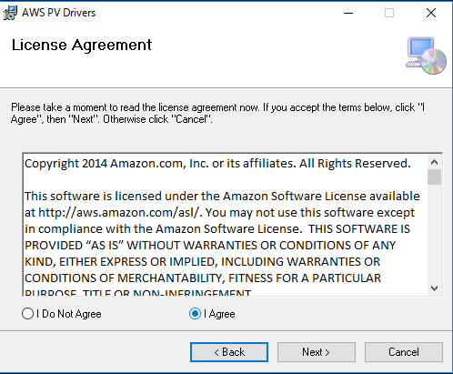
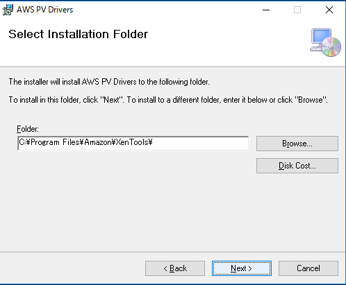
I'm Readyを選択する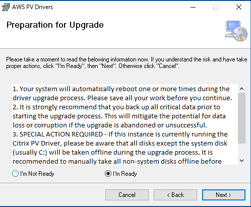
Nextを選択するとドライバー更新と再起動が始まる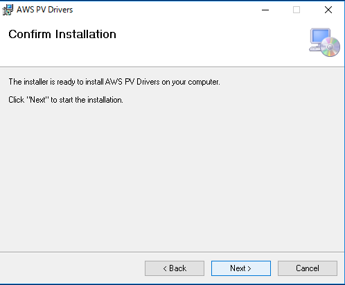
再起動後、EC2のステータスチェックとSSMの接続状態が正常に戻ったことを確認してから再接続し、レジストリのバージョンを再確認する
Get-ItemProperty HKLM:\SOFTWARE\Amazon\PVDriver今回のPVドライバー更新ログを展開する
最初のダウンロードはTLSエラーとなり、ZIPが作成されていない状態で展開したため、続けてパス不存在のエラーが発生した。TLS 1.2を有効化して再実行すると、6,406,958バイトのZIPとAWSPVDriverSetup.msiを取得できた
PS C:\Users\Administrator> Invoke-WebRequest https://s3.amazonaws.com/ec2-windows-drivers-downloads/AWSPV/Latest/AWSPVDriver.zip -OutFile $env:USERPROFILE\pv_driver.zip
Invoke-WebRequest : 要求は中止されました: SSL/TLS のセキュリティで保護されているチャネルを作成できませんでした
PS C:\Users\Administrator> Expand-Archive $env:USERPROFILE\pv_driver.zip -DestinationPath $env:USERPROFILE\pv_drivers
Expand-Archive : パス 'C:\Users\Administrator\pv_driver.zip' が存在しないか、または有効なファイル システム パスではありません。
PS C:\Users\Administrator> [Net.ServicePointManager]::SecurityProtocol = [Net.SecurityProtocolType]::Tls12
PS C:\Users\Administrator> Invoke-WebRequest -UseBasicParsing -Uri "https://s3.amazonaws.com/ec2-windows-drivers-downloads/AWSPV/Latest/AWSPVDriver.zip" -OutFile "$env:USERPROFILE\pv_driver.zip"
PS C:\Users\Administrator> Get-Item "$env:USERPROFILE\pv_driver.zip"
Length Name
------ ----
6406958 pv_driver.zip
PS C:\Users\Administrator> Expand-Archive -LiteralPath "$env:USERPROFILE\pv_driver.zip" -DestinationPath "$env:USERPROFILE\pv_drivers" -Force
PS C:\Users\Administrator> Get-ChildItem "$env:USERPROFILE\pv_drivers" -Filter "AWSPVDriverSetup.msi" -Recurse
Length Name
------ ----
6867456 AWSPVDriverSetup.msi
PS C:\Users\Administrator> $msi = Get-ChildItem "$env:USERPROFILE\pv_drivers" -Filter "AWSPVDriverSetup.msi" -Recurse | Select-Object -First 1
PS C:\Users\Administrator> Start-Process -FilePath $msi.FullNameMSI実行後に自動再起動し、Fleet Managerから再接続できることを確認した。再起動後のレジストリ値は8.6.1となった
PS C:\Users\Administrator> Get-ItemProperty HKLM:\SOFTWARE\Amazon\PVDriver
Version : 8.6.1
PSPath : Microsoft.PowerShell.Core\Registry::HKEY_LOCAL_MACHINE\SOFTWARE\Amazon\PVDriver2026/08/11の実機検証では、AWS公式のLatest URLから取得したパッケージにより8.6.1へ更新された。一方、検証時点のAWS公式バージョン履歴には8.6.0まで掲載されていた。公開ページの表だけでなく、配布パッケージのreadmeと更新後のレジストリ値を作業記録に残す
出典：EC2 WindowsインスタンスでのPVドライバーのアップグレード
出典：Windowsインスタンス用PVドライバーとバージョン履歴
6.2.2 ENAドライバーの確認
ENAドライバーは、Nitroベースインスタンスのネットワーク接続を担う。インプレースアップグレード前に現在のバージョンを確認し、AWS公式の対象OS向け最新バージョンより古い場合だけ更新する
Get-CimInstance Win32_PnPSignedDriver |
Where-Object { $_.DeviceName -like "*Elastic Network Adapter*" } |
Select-Object DeviceName, DriverVersion, DriverDate今回のENAドライバー確認結果を展開する
2026/08/11時点の実機では2.11.0が導入されており、AWS公式の最新バージョンと一致したため、ENAドライバーの再インストールは実施していない
DeviceName DriverVersion
---------- -------------
Elastic Network Adapter 2.11.0出典：EC2 WindowsインスタンスへのENAドライバーのインストール
6.2.3 NVMeドライバーの確認
NitroベースインスタンスではEBSボリュームがNVMeデバイスとして認識される。次のコマンドで確認し、OSアップグレード後も同じ要領で再確認する。2026/08/11時点のAWS公式最新パッケージは1.8.2であり、今回の実機ではドライバーバージョン1.8.2.53が導入されていたため、再インストールは実施していない
Get-CimInstance Win32_PnPSignedDriver |
Where-Object { $_.DeviceName -like "*NVMe*" } |
Select-Object DeviceName, DriverVersion, DriverDate今回のNVMeドライバー確認結果を展開する
DeviceName DriverVersion DriverDate
---------- ------------- ----------
AWS NVMe Elastic Block Storage Adapter 1.8.2.53 2026/05/19 9:00:006.3 SSM Agentの確認
SSM AgentはFleet ManagerやSession Managerから接続するために使用する。StatusがRunningであることを確認し、アップグレード後にも同じコマンドで再確認する
Get-Service AmazonSSMAgent6.4 ウイルス対策とファイアウォールの一時無効化
ウイルス対策・スパイウェア対策ソフトとファイアウォールはアップグレードプロセスと競合するおそれがあるため、一時的に無効化する。無効化した項目は9章の事後作業で必ず再有効化するため、変更内容を記録しておく
6.5 空き容量の確認
Get-Volume -DriveLetter C | Select-Object DriveLetter, SizeRemaining, Size空き容量が不足する場合は、EBSボリュームの拡張とOS側のパーティション拡張を先に実施する
7. インストールメディアの準備
7.1 パブリックスナップショットの検索
AWSはWindows Serverインストールメディアを言語別のパブリックスナップショットとして提供している。ISOのダウンロードとアップロードは不要
- Amazon EC2コンソールで
Elastic Block Store＞スナップショットを選択 - フィルターを
パブリックスナップショットへ変更 - 検索バーで
所有者のエイリアス、=、amazonを指定 - 続けて
説明にWindows 2025 Japanese Installation Mediaを入力して検索 - 該当スナップショットのIDが5.1の表に記録したメディアスナップショットIDと一致することを確認
amazon、説明をWindows 2025 Japanese Installation Mediaで絞り込む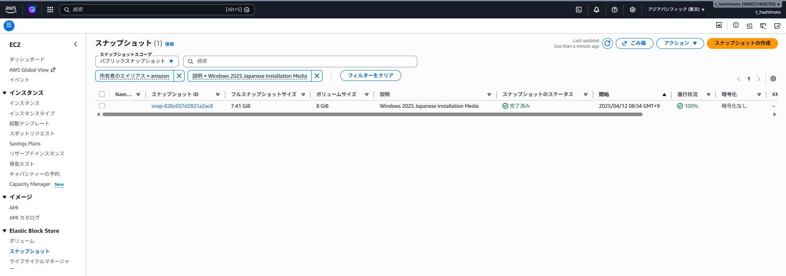
インストールメディアはOSの言語設定と一致させる。日本語AMIから構築したインスタンスにはJapanese、英語版にはEnglishのメディアを選択する。言語の異なるメディアではアップグレードできない
7.2 ボリュームの作成
- 該当スナップショットを選択し、
アクション＞スナップショットからボリュームを作成を選択 - アベイラビリティーゾーンを対象インスタンスと同じAZへ変更
- 他の設定は既定のままボリュームを作成
ap-northeast-1aで使用可能になったことを確認する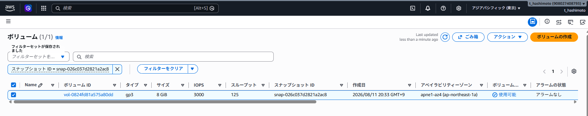
EBSボリュームは同じAZのインスタンスにしかアタッチできない。既定値のまま作成するとAZ不一致でアタッチに失敗しやすいため、作成時に必ず対象インスタンスのAZへ合わせる
7.3 アタッチとオンライン化
- 作成したボリュームを選択し、
アクション＞ボリュームのアタッチを選択 - 対象インスタンスとデバイス名(例:
xvdf)を指定してアタッチ - RDP接続に戻り、
ディスクの管理で該当ディスクを右クリックしてオンラインを選択 - エクスプローラーでドライブ(例:
D:)としてメディアの内容が見えることを確認
ディスクの管理で初期化(フォーマット)を実行するとメディアの内容が消える。操作はオンラインへの切り替えのみ
xvdfを指定してアタッチする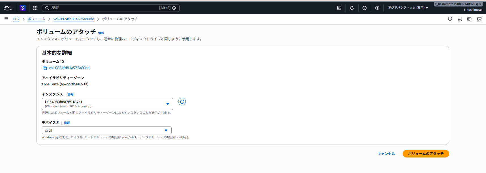
D:ドライブとして認識される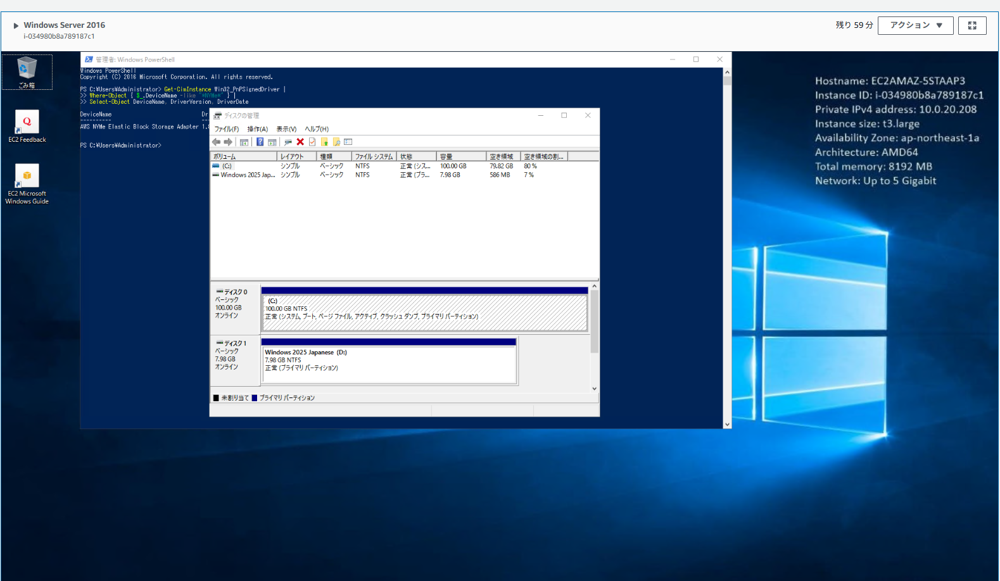
出典：AWS公式: EC2 Windowsインスタンスでのインプレースアップグレード
8. インプレースアップグレードの実行
8.1 セットアップの起動
管理者としてPowerShellを開き、メディアのドライブへ移動してセットアップを実行。ドライブ文字は7.3で認識された値へ読み替える
D:.\setup.exe /auto upgrade /dynamicupdate disableアップグレード中の更新プログラム適用は失敗の要因になるため、AWS公式手順ではDynamic Updateを無効化して実行する。無効化した分の更新はアップグレード完了後にWindows Updateで適用する
8.2 エディションの選択
アップグレード元のWindows Server 2016と同じエディション、同じインストールオプションを選択する。今回の環境ではWindows Server 2025 Datacenter (デスクトップ エクスペリエンス)を選択した
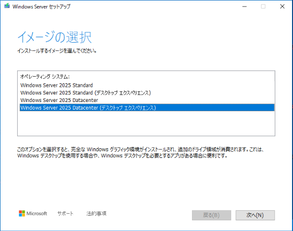
- セットアップ画面で、現在のエディションとインストールオプションに対応するWindows Server 2025を選択
- ライセンス条項を確認して同意
ファイル、設定、アプリを保持するが選択されていることを確認してインストールを開始
同意するを選択する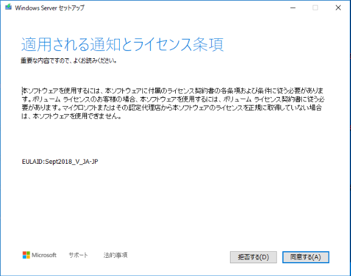
既存OSと同じエディション(本ページの例ではDatacenter)、同じインストールオプション(デスクトップエクスペリエンス)を選択する。Server Core版や下位エディションを選ぶとアップグレードを継続できない
8.3 進行状況の確認
セットアップ開始から数分でRDPセッションが切断され、以降はOSへ接続できない。進行状況はコンソール画面のキャプチャで確認する
- Amazon EC2コンソールで対象インスタンスを選択
アクション＞モニタリングとトラブルシューティング＞インスタンスのスクリーンショットを取得を選択更新プログラムを構成していますなどの表示と進捗率を確認- スクリーンショットを更新しながら完了まで待機。CPUとディスクのCloudWatchメトリクスでも進行を確認
アップグレード中はインスタンスステータスチェックが一時的に失敗状態になり、完了すると回復する。ステータスチェック連動のアラームや自動復旧を設定している場合は、誤検知による再起動を防ぐため事前に無効化する
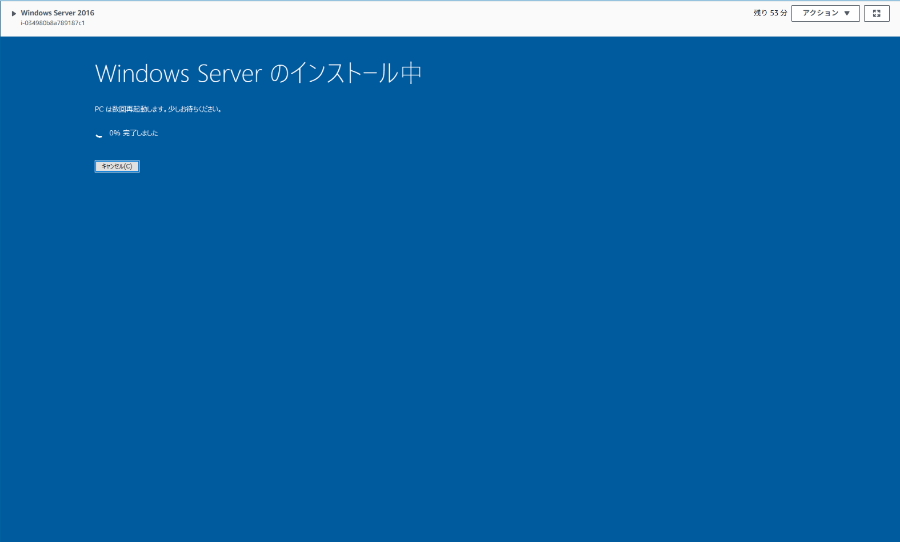
8.4 完了の確認
- スクリーンショットにロック画面が表示されたらアップグレード完了と判断
- ステータスチェックが2/2で成功していることを確認
- RDPで再接続し、サインインできることを確認
- 初回サインイン時に診断データの選択画面が表示された場合は、組織のポリシーに従って選択する。本検証では
必須のみを選択 - 開始から完了までの時間を作業記録へ保存。本検証では約1時間で完了
i-034980b8a789187c1でWindows Server 2025へ再接続し、診断データは必須のみを選択する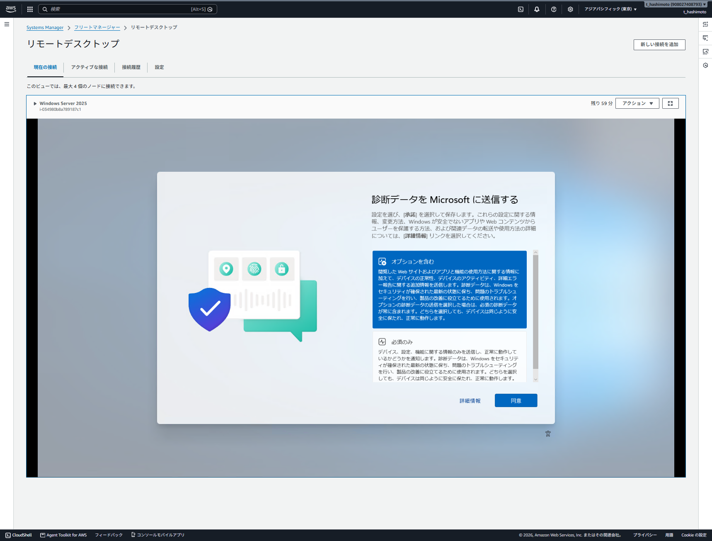
9. アップグレード後の確認と作業完了
同じEC2インスタンスIDでWindows Server 2025が起動し、SSM Agent、ENA/NVMeドライバー、Windowsライセンス認証が正常であることを確認して、インプレースアップグレードを完了とする
9.1 OSバージョンの確認
Get-CimInstance Win32_OperatingSystem | Select-Object Caption, Version, BuildNumber, LastBootUpTime今回のOS確認結果を展開する
Caption Version BuildNumber
------- ------- -----------
Microsoft Windows Server 2025 Datacenter 10.0.26100 26100i-034980b8a789187c1であり、既存EC2上のインプレースアップグレードであることを確認できる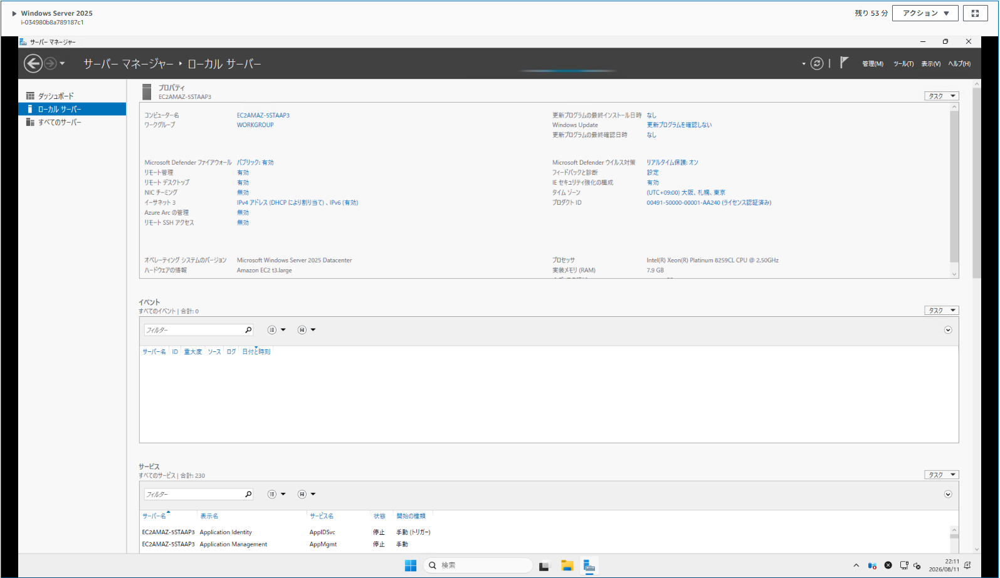
9.2 SSM AgentとAWSドライバーの確認
Get-Service AmazonSSMAgentGet-CimInstance Win32_PnPSignedDriver |
Where-Object { $_.DeviceName -like "*Elastic Network Adapter*" -or $_.DeviceName -like "*NVMe*" } |
Select-Object DeviceName, DriverVersion今回のSSM Agentとドライバー確認結果を展開する
Status Name
------ ----
Running AmazonSSMAgent
DeviceName DriverVersion
---------- -------------
AWS NVMe Elastic Block Storage Adapter 1.8.2.53
Amazon Elastic Network Adapter 2.11.0.0NVMeアダプターが2行表示されたのは、ルートボリュームとインストールメディア用EBSボリュームの両方が接続されていたため。メディアをデタッチすると通常は1行になる
9.3 ライセンス認証の確認
cscript //nologo $env:windir\System32\slmgr.vbs /dlv今回のライセンス認証結果を展開する
名前: Windows(R), ServerDatacenter edition
ライセンスの状態: ライセンスされています
登録 KMS コンピューター名: 169.254.169.251:1688ライセンス込みのAWS提供AMIでは、WindowsがAWS KMSへ到達してライセンスされていますと表示されれば正常
9.4 Windows Updateとインストールメディアの削除
Dynamic Updateを無効化してアップグレードしたため、運用環境ではWindows Updateを適用して再起動する。検証終了後はインストールメディア用EBSボリュームをデタッチし、使用可能になったことを確認して削除する。デタッチしただけではEBS料金が継続する
- 6.4で無効化したウイルス対策ソフトとファイアウォールを再有効化
- 8.3で無効化した監視・アラーム・自動復旧を再有効化
- インストールメディアのEBSボリュームをデタッチして削除
- 動作確認の完了後、不要になった検証用リソース(インスタンス、バックアップAMIと関連スナップショット)を削除してコストを抑止
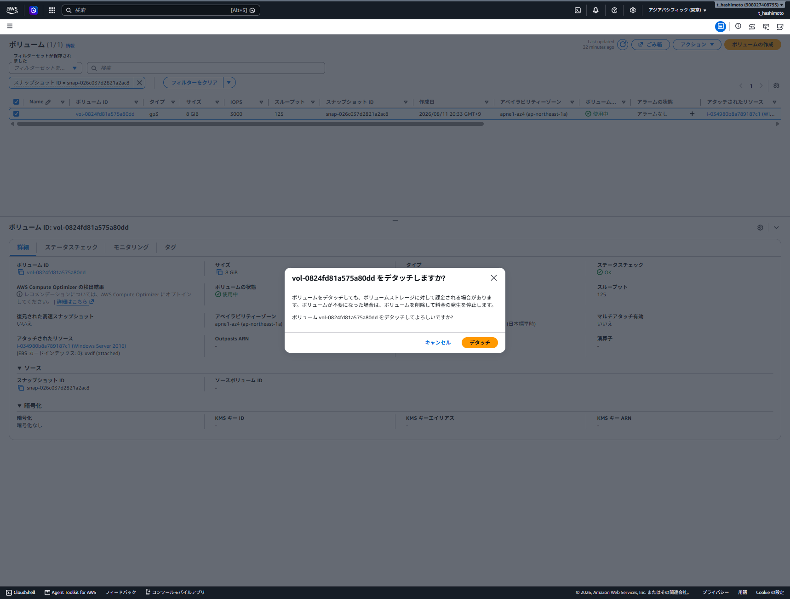